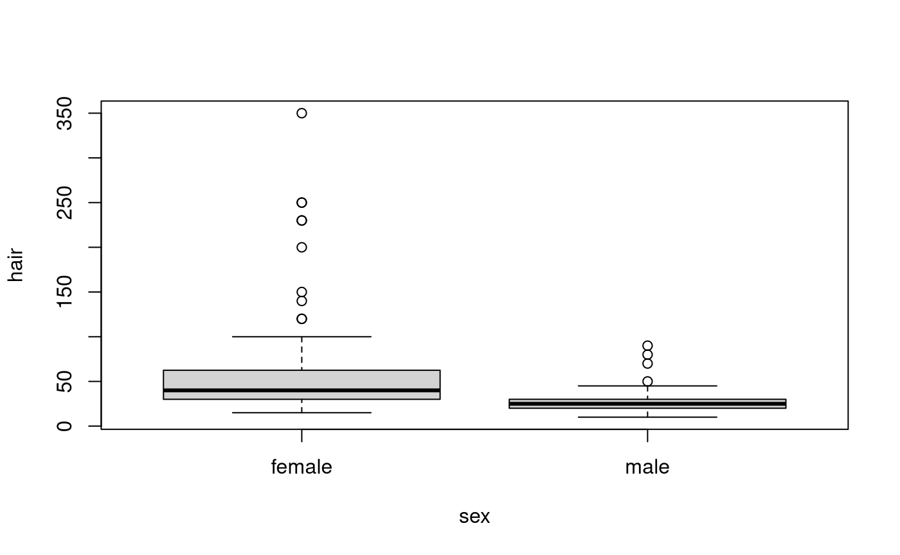
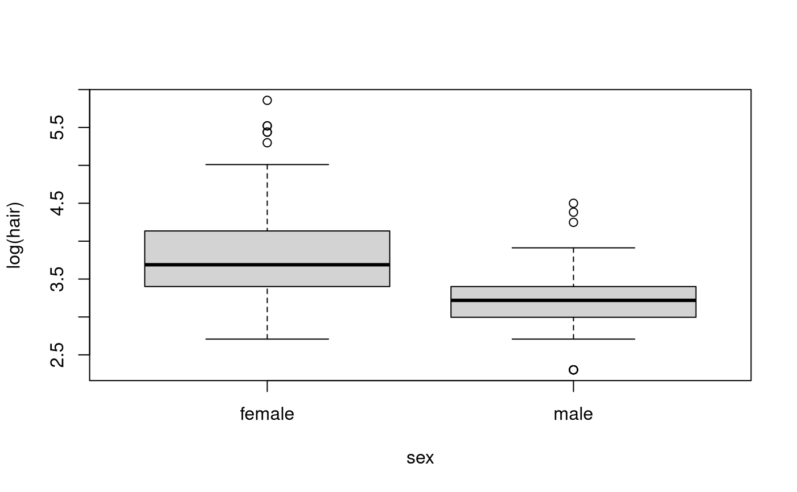
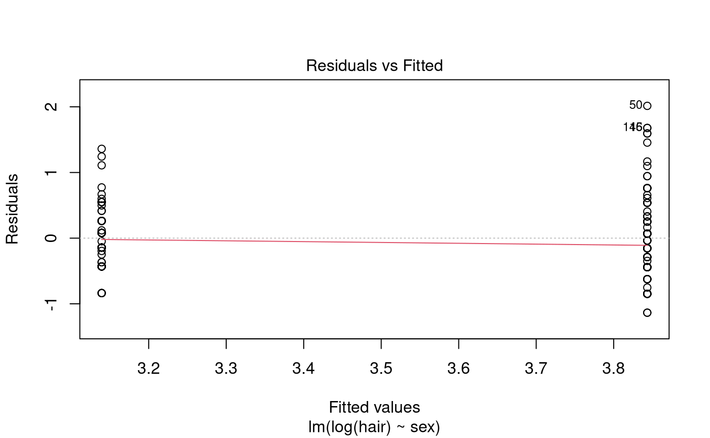
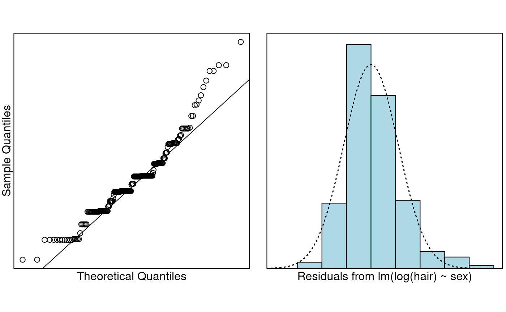

Case Study 6.2: Students' expenditure on haircuts by gender
Source:vignettes/articles/CS6_2.Rmd
CS6_2.RmdProblem
The question of interest is “Do females spend more money on their
hair than males?” Also, “how much do students typically spend on
haircuts?” To answer these questions, a lecturer carried out a survey on
200 students. Also, A variety of variables were measured including
hair and sex.
The variables of interest are:
-
hair: The student’s estimated monthly expenditure on haircuts. -
sex: The student’s gender, Male or Female.
Question of Interest
Do females spend more money on their hair than males? Also, how much do students typically spend on haircuts?
Read in and Inspect the Data
survey.df = read.table("survey.txt", header = TRUE, stringsAsFactors = TRUE)
# To make things a little less cluttered we put the data in its own dataframe
hair.df = with(survey.df, data.frame(hair = hair, sex = sex))
plot(hair ~ sex, data = hair.df)
Females seem to spend more money on haircuts than males. We can see the data is quite right-skewed. There also appears to be a problem with equality of variance. Maybe taking logs will help.

Definitely makes things nicer, we should stick with the log-scale. So perhaps we should perform our inference on the log-scale. Even on the log-scale females appear to be spending more money on haircuts than males.
Model Building and Check Assumptions

normcheck(hair.fit)
cooks20x(hair.fit)
summary(hair.fit)##
## Call:
## lm(formula = log(hair) ~ sex, data = hair.df)
##
## Residuals:
## Min 1Q Median 3Q Max
## -1.13528 -0.43125 -0.04246 0.26189 2.01460
##
## Coefficients:
## Estimate Std. Error t value Pr(>|t|)
## (Intercept) 3.84333 0.05380 71.443 < 2e-16 ***
## sexmale -0.70403 0.07889 -8.924 3.05e-16 ***
## ---
## Signif. codes: 0 '***' 0.001 '**' 0.01 '*' 0.05 '.' 0.1 ' ' 1
##
## Residual standard error: 0.5565 on 198 degrees of freedom
## Multiple R-squared: 0.2868, Adjusted R-squared: 0.2832
## F-statistic: 79.64 on 1 and 198 DF, p-value: 3.048e-16
# Column bind the backtransformed output together
cbind(exp(coef(hair.fit)), exp(confint(hair.fit)))## 2.5 % 97.5 %
## (Intercept) 46.6807537 41.9821788 51.9051852
## sexmale 0.4945885 0.4233304 0.5778413Confidence Interval Output
pred.df = data.frame(sex = c("female", "male"))
exp(predict(hair.fit, pred.df, interval = "confidence"))## fit lwr upr
## 1 46.68075 41.98218 51.90519
## 2 23.08776 20.60453 25.87028Methods and Assumption Checks
The boxplot of hair vs sex revealed that
the data were right-skewed. Hence, we logged hair. The
boxplot of log(hair) vs sex show visible
improvement. So, we have fitted a linear model with
log(hair) being explained by sex.
We probably wouldn’t say the data is normal from the Q-Q plot. What we have is evidence of a lot of rounding—people rounding to the nearest $5, $10, etc. However, the CLT should make things okay. The histogram of the residuals was unimodal and reasonably symmetric. The rest of our model assumptions have been satisfied.
Our final model is where . Here if the student was male, otherwise it was zero.
Our model explained 29% of the variability in the logged students’ hair expenditure.
Executive Summary
We have strong evidence that females typically spend more money on their hair than males.
We estimate that males spend approximately half as much as females do on their hair. We are confident this factor is between 42% and 58%.
We estimate the median amount females spend on their hair each month is $47 and are confident it is between $42 and $52. For males we estimate a median spend of $23 and are confident it is between $21 and $26.